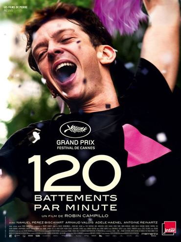
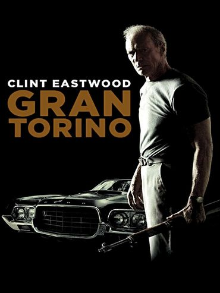

Accueil
Actualités
Notre Sélection pour le 05/08/2019

120 battements par minutes
Synopsis
Casting
je réserve !
Retour programme

Gran Torino
Synopsis
Casting
je réserve !
Retour programme
Accès réservé aux menmbres.
×
Identifiants.